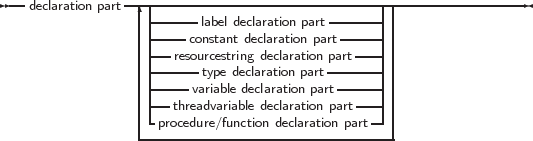
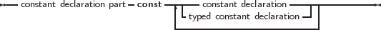
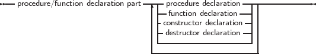

Units and programs are made of blocks. A block is made of declarations of labels, constants,
types, variables and functions or procedures. Blocks can be nested in certain ways, i.e., a
procedure or function declaration can have blocks in themselves. A block looks like the
following:
_________________________________________________________________________________________________________
Blocks




___________________________________________________________________
Labels that can be used to identify statements in a block are declared in the label declaration part
of that block. Each label can only identify one statement.
Constants that are to be used only in one block should be declared in that block’s constant
declaration part.
Variables that are to be used only in one block should be declared in that block’s variable
declaration part.
Types that are to be used only in one block should be declared in that block’s type declaration
part.
Lastly, functions and procedures that will be used in that block can be declared in the
procedure/function declaration part.
These 4 declaration parts can be intermixed, there is no required order other than that you cannot
use (or refer to) identifiers that have not yet been declared.
After the different declaration parts comes the statement part. This contains any actions that the
block should execute. All identifiers declared before the statement part can be used in that
statement part.